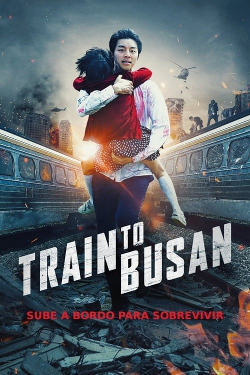

Train to Busan (2016)
Sinopsis Rápida
Un virus mortal convierte a los humanos en monstruos sedientos de sangre, atrapando a un grupo de pasajeros en un tren bala hacia Busan. ¿Sobrevivirán al viaje infernal?
Sinopsis Detallada
En medio de un brote de zombis que se propaga rápidamente por Corea del Sur, un grupo diverso de pasajeros a bordo de un tren KTX se ve obligado a luchar por su supervivencia. La película no solo ofrece sustos y acción trepidante, sino que también explora temas de humanidad, sacrificio y paternidad en medio del caos. A medida que el tren avanza, las relaciones se ponen a prueba, revelando la naturaleza del ser humano bajo presión extrema. El director Yeon Sang-ho crea una atmósfera tensa e implacable, manteniendo la tensión hasta el final con giros inesperados. Una experiencia cinematográfica intensa y memorable.
¿Por qué tenés que verla?
- Experiencia de terror frenética y absorbente que te mantendrá al borde del asiento.
- La dirección magistral de Yeon Sang-ho crea tensión visual y una coreografía de acción impecable.
- Impulsó una nueva ola de películas de zombies asiáticas y tuvo un gran impacto cultural.
- Personajes complejos y relaciones que evolucionan a lo largo de la película.
Idea Extra
Comparación de 'Train to Busan' con otras películas de zombies de diferentes culturas: ¿Cómo se refleja la sociedad y la cultura en la representación de los zombis y la supervivencia?
{{CONTENIDO_RELACIONADO}}